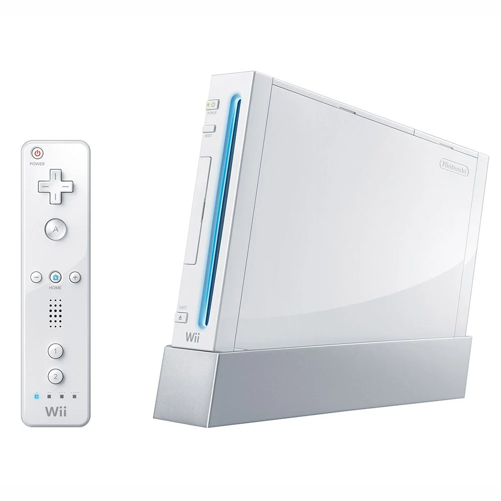

Wii
The Wii is a home video game console developed and marketed by Nintendo. It was released on November 19, 2006, in North America, and in December 2006 for most other regions of the world. It is Nintendo's fifth major home game console, following the GameCube, and is a seventh-generation console alongside Microsoft's Xbox 360 and Sony's PlayStation 3.